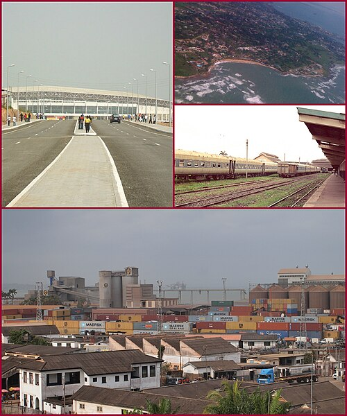

Takoradi rests along the cost of south-eastern Ghana along with its sister: Takoradi. The city, like most of the coast, was colonised by the dutch and Brittain with castles from both still standing today along the coast.

Since 1946, Takoradi and Sekondi have thrived as a single municipality, but Takoradi became the cultural reference for the area. It has a mixture of beach and hilly terrain with new and old buildings throughout. Depite not having an international airport, a local one is established in the area as well as reduced rail service and sea travel.